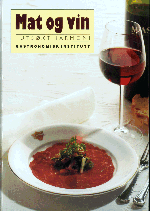

| Legg en vinbok under juletreet | |
|
 Bøker om vin kan gi et uendelig forråd av informasjon og fordypning, men de kan selvfølgelig aldri erstatte smakingen og nytelsen. Aftenpostens vinekspert har plukket ut sine favorittbøker med tanke på juletreet.
Aftenpostens vinekspert Geir Salvesen har hver uke nye vin-nyheter og -reportasjer. |
Tidligere artikler Relaterte lenker
Rødvinguide
|